AI 工程師也需要一個團隊
一個 Claude Code session 很強，但它是一個人在做事。這篇記錄我怎麼讓好幾個 AI 工程師分工、互相審查、合併、驗收，以及一次從派工到交付只花三分多鐘的實際過程。
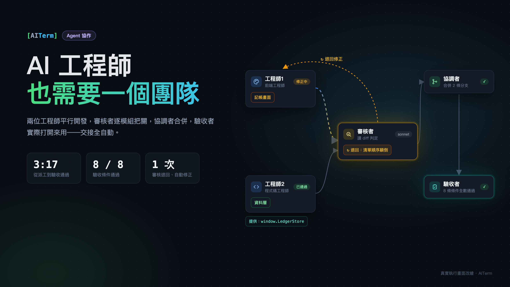
用 Claude Code 久了，我發現自己最常做的事不是寫需求，而是當人肉調度員。
叫它寫 A，寫完我看一下、說「可以」；再叫它寫 B，B 要用到 A，我得提醒它 A 長什麼樣子；寫完 B，我再開一個新對話請它幫忙 review；review 有意見，我把意見貼回去改；最後自己合併、自己打開瀏覽器點一點，確認真的能用。
每一步 AI 都做得很好。但交接全部卡在我身上。
Claude Code 其實有 subagent，可以把一部分工作派出去。這很好用，但本質上還是「一個主控 session 帶著幾個臨時助手」：全貌在主控 session 的腦袋裡，大家擠在同一個 context 裡，在同一份程式碼上依序進行。任務一大，context 就滿；想同時做兩件事，就會互相踩到。
所以我在自己開發的終端機 AITerm 裡做了一個不一樣的東西：Agent 協作。
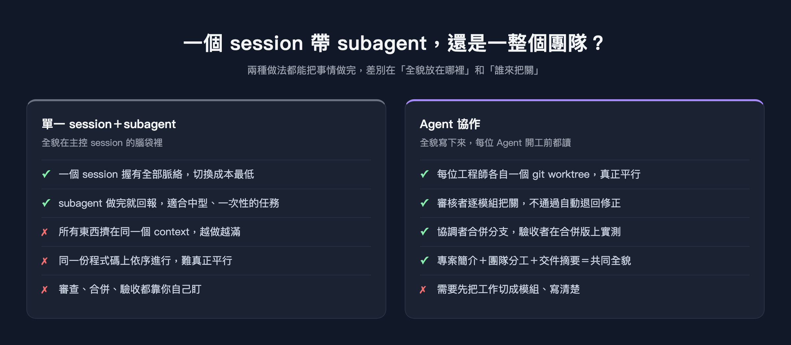
把 AI 當成一個團隊來編組
Agent 協作是一張桌布，上面放的是「人」，不是任務。目前有四種角色：
- 工程師：真正寫程式的人，可以放好幾位。每位工程師有自己的 git worktree 和分支，彼此不會改到對方的檔案，所以是真正的平行。
- 審核者：每個模組做完都要經過它。它只讀 diff、不改檔案，判定通過或不通過；不通過就附上理由，自動退回給原本的工程師修。
- 協調者：所有模組都審過之後，負責把各工程師的分支合併成一個整合版。
- 驗收者：在合併後的版本上實際跑起來——網頁就開瀏覽器操作——照驗收條件一條一條確認，並留下證據截圖。
整條流程長這樣：
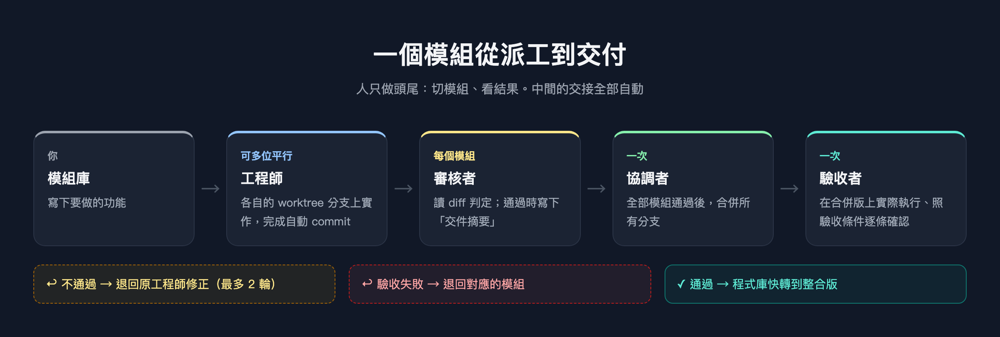
人只做頭尾兩件事：把工作切成模組、寫清楚，以及最後看結果。中間誰該接手、什麼時候接手、失敗了退給誰，全部自動。
說起來簡單，但實際跑起來到底是什麼樣子？下面是我今天早上從零開始做一個「記帳本」小網頁的完整過程，每張圖都是當下的真實畫面。
實作：從空白桌布到交付
1. 把團隊放上桌布
從上方把角色拖到桌布上，會跳出設定視窗：名字、角色、提示詞、要用 Claude Code 還是 Codex、用哪個模型、在哪個程式庫工作。
角色可以從內建清單直接帶入，每個角色都帶一段預設的提示詞前綴。我讓工程師1 當「前端工程師」，工程師2 維持「程式碼工程師」。
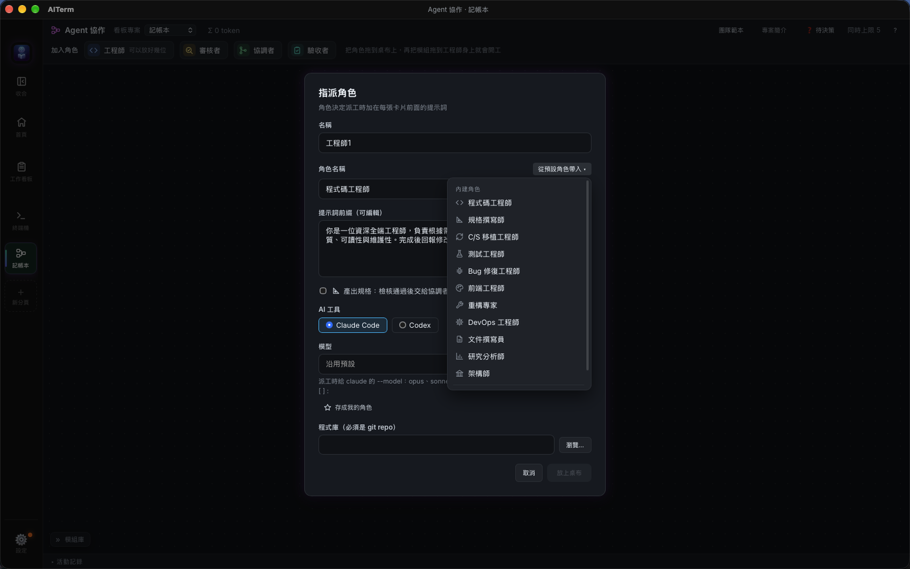
再放一位審核者、一位協調者、一位驗收者，團隊就到齊了。連線是自動畫的，表示工作會怎麼流動。右邊那張小卡是新手提示，會告訴你下一步該做什麼。
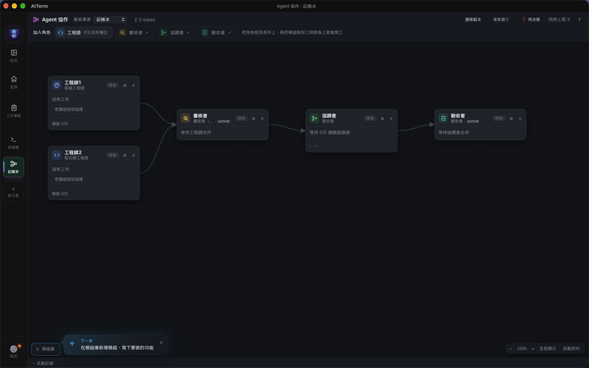
2. 寫一份所有人都會讀的「專案簡介」
這一步是我後來才加上的，也是我覺得最關鍵的一步。
一個 session 自己做的時候，它知道整個專案在幹嘛。但團隊裡每張卡都是一個新的 session，如果什麼都不給，工程師1 不會知道「不准用框架」，工程師2 不會知道「金額一律用整數」，兩個人各自做出來的東西很可能接不起來。
所以每個專案有一份專案簡介，寫一次，之後每一位 Agent 開工前都會先讀到它。
我隨手打了幾句很口語的草稿，按「AI 潤飾」，它幫我整理成目標、技術選型、目錄慣例、共同約定、不做的事。不滿意可以按「還原」。
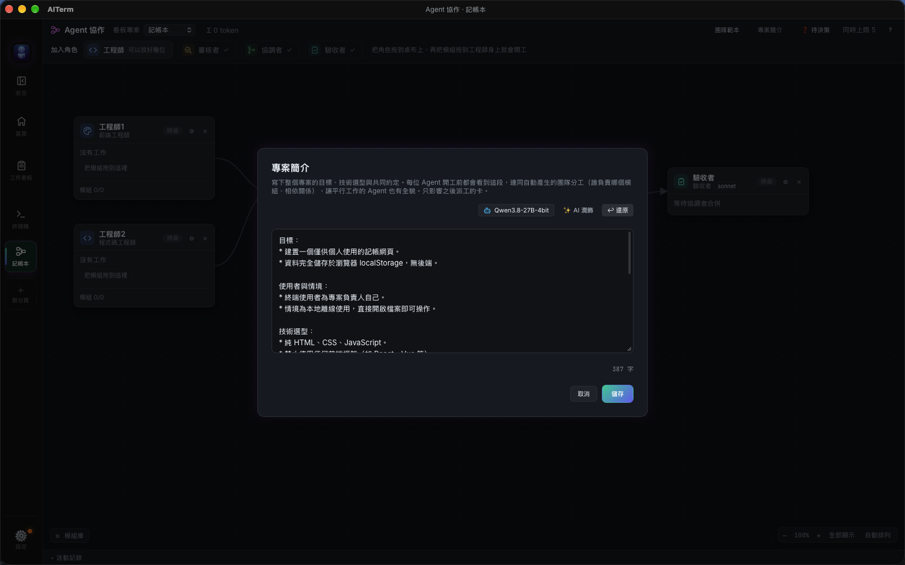
3. 在模組庫寫下要做的事
左邊的模組庫是「還沒開始的工作」。我寫了兩個模組：
- 資料層：
js/store.js，負責存取 localStorage，對外提供add / remove / list / summary。 - 記帳畫面：
index.html，表單、清單、本月統計。
這裡有個刻意的安排：兩個模組會同時開工，畫面那邊的分支上看不到資料層的程式碼。所以我在兩邊都寫清楚介面長什麼樣子，並且告訴畫面那邊「不要自己建 store.js」。這就是平行開發要付的代價——你得先把邊界講清楚。
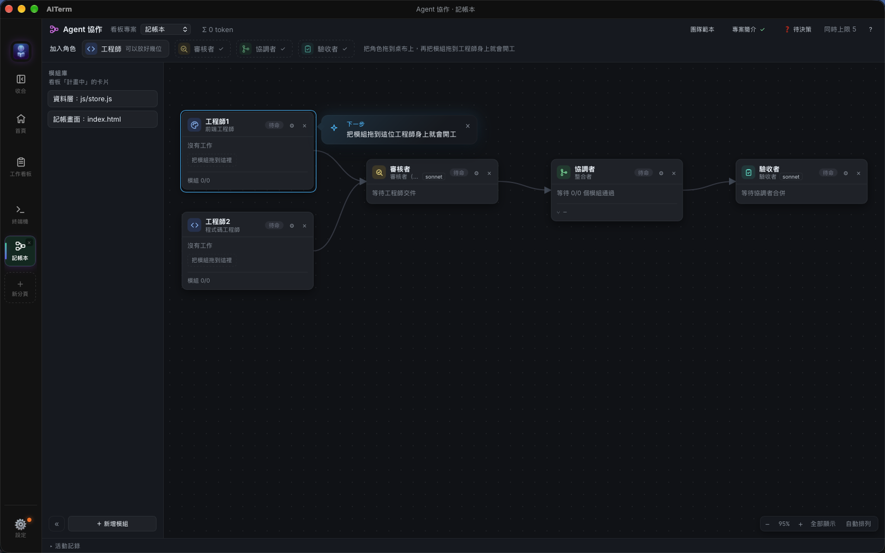
4. 拖曳就是派工
把「資料層」拖到工程師2 身上、「記帳畫面」拖到工程師1 身上，就開始了。
AITerm 會替每位工程師建好 worktree、開一個分頁、啟動 Claude Code，把「角色＋專案背景＋卡片內容」組成提示送進去。卡片上看得到正在做哪個模組、跑了多久、用了多少 token。
下面這張是 09:51 的畫面：工程師2 的資料層已經做完、審核通過（綠色）；工程師1 的畫面還在寫（藍色）。
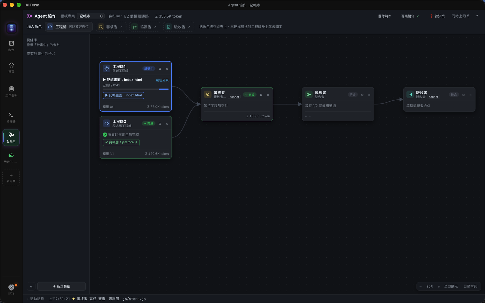
5. 審核者把關，並寫下「交件摘要」
模組做完會自動 commit，然後交給審核者。審核者在另一份獨立的 worktree 裡讀 diff，照需求判定。
通過的時候，它還要多寫一兩句「這個模組對外提供了什麼」。這就是交件摘要。之後每一張卡的團隊分工裡，這個模組下面都會多一行「提供：…」，後面的工程師不用翻程式碼就知道怎麼用。
下面這張，審核者正在審工程師1 的畫面（黃色流動的線），我把滑鼠移到工程師2 的模組上，就看得到審核者寫的交件摘要。
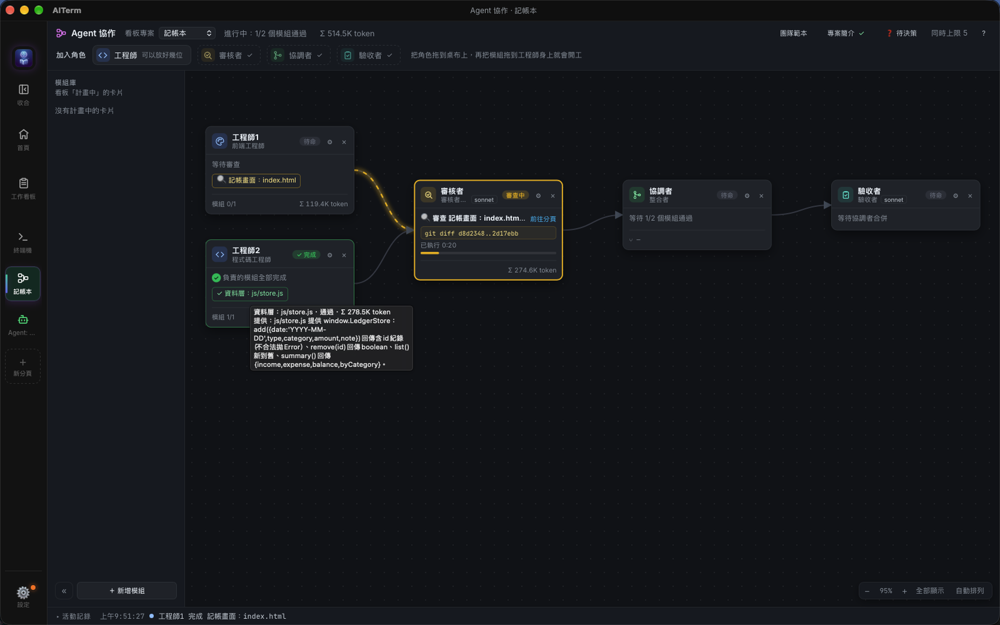
6. 第一次就被退回了
然後，審核者把工程師1 的畫面退回了。
理由寫得很具體：renderList() 拿到 store.list() 的結果後又自己排序了一次，而且誤以為 list() 是舊到新。實際上 list() 已經是新到舊，再排一次會讓同一天的紀錄順序顛倒——你連續記兩筆，新的那筆反而跑到下面。
這種 bug 不會讓程式當掉，測試也不一定抓得到，但使用者一用就覺得怪。審核者是讀了兩邊的程式碼才看出來的。
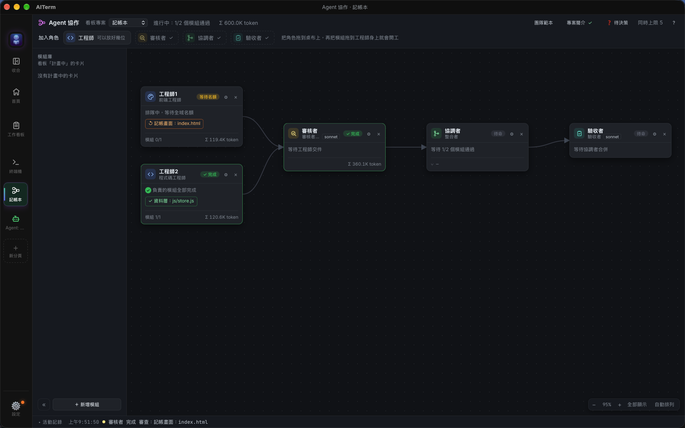
退回之後，修正卡自動派回給工程師1。它開工前看到的提示長這樣：
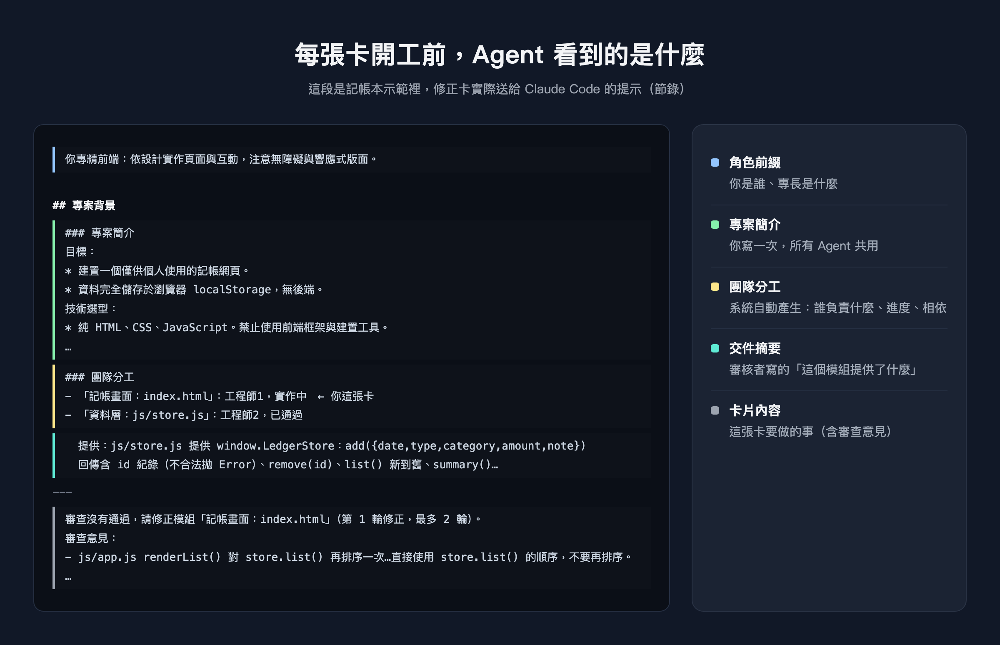
注意中間那段「團隊分工」：工程師1 知道自己正在做哪個模組，也知道資料層已經通過，而且直接看得到資料層提供了什麼。最下面是審查意見與原始需求。
它在十秒左右改好、重新 commit，審核者再審一次，通過。
7. 合併，然後真的打開來用
兩個模組都通過後，協調者把兩條分支合併成整合版；接著驗收者接手。
驗收者不只是讀程式碼。它在合併後的版本上開瀏覽器，真的去操作：新增收入和支出、看清單順序、檢查本月統計、輸入不合法的金額、重新整理看資料還在不在、刪除一筆、把視窗縮到手機寬度。每一條都留下證據截圖。
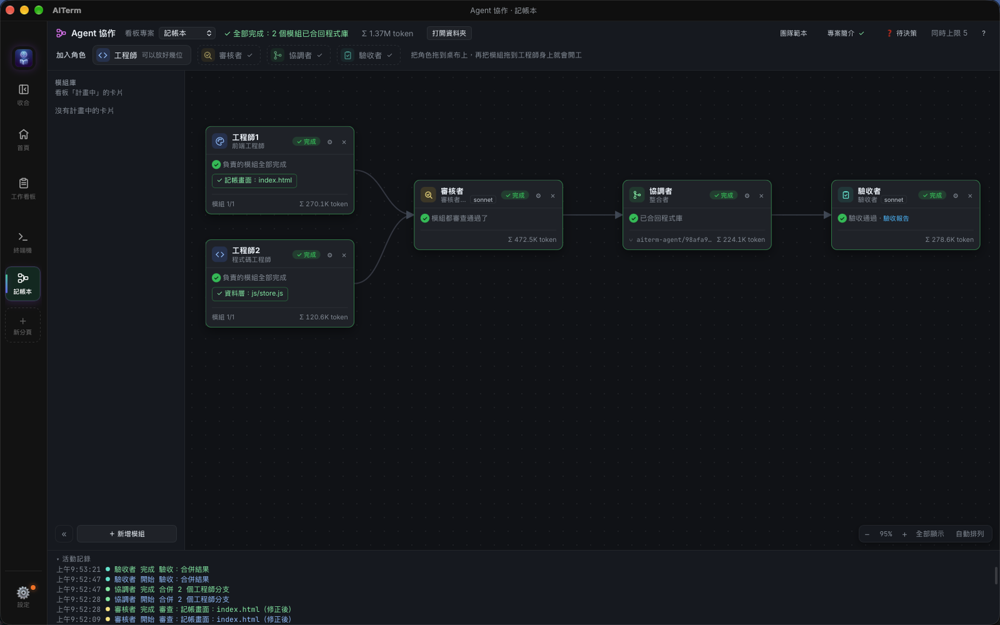
驗收報告：8 條驗收條件，8 條通過。
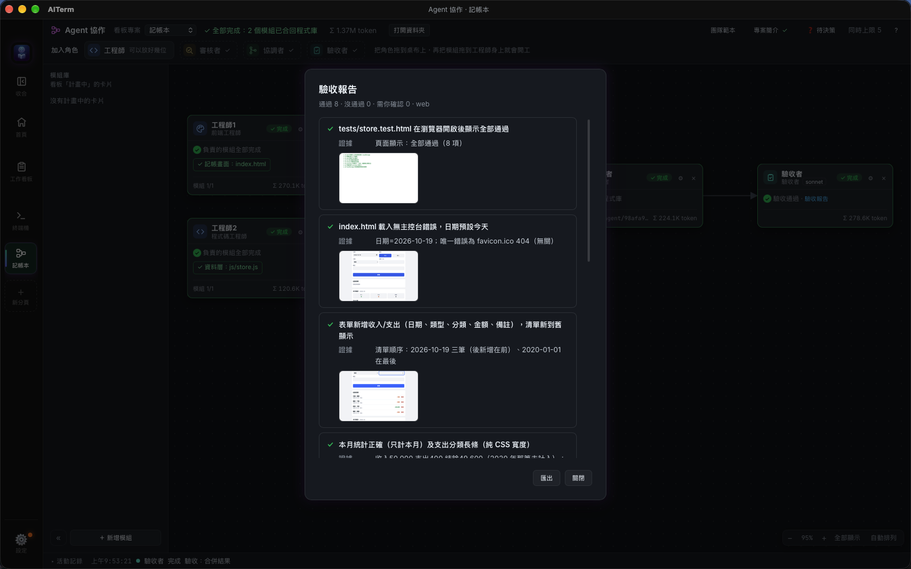
驗收通過之後，AITerm 會把我原本的程式庫快轉到整合版。打開資料夾，index.html、css/、js/、tests/ 都在，直接用瀏覽器打開就能記帳：
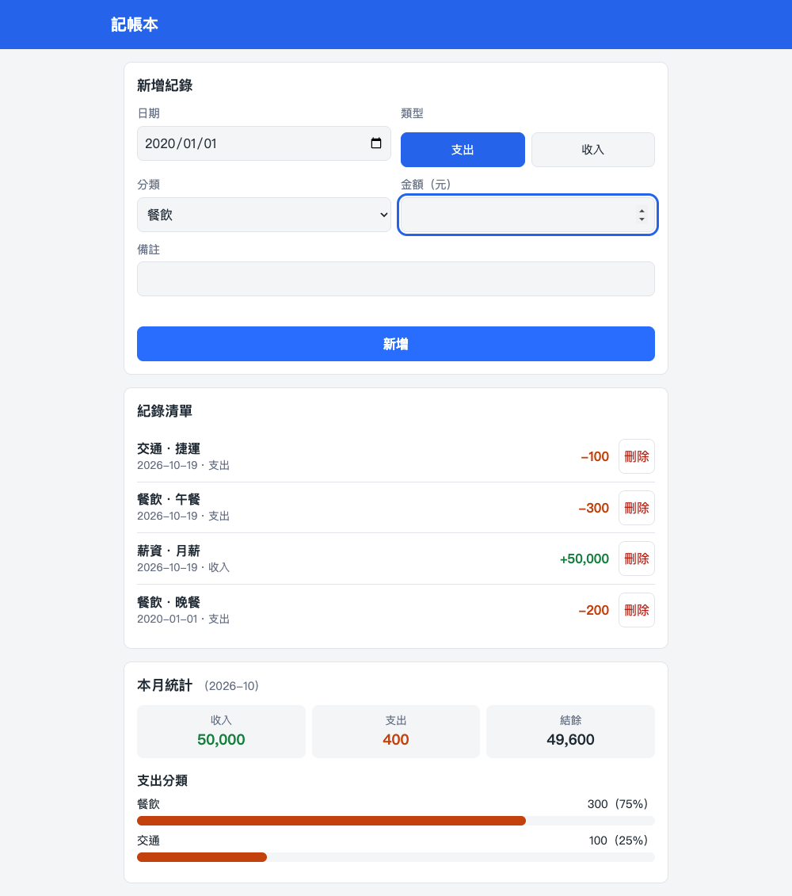
從第一個模組開工（09:50:04）到驗收通過（09:53:21），三分十七秒，中間包含一次退回修正。整輪總共用了約 137 萬 token。
讓一群 Agent 有「共同的全貌」
回頭看，這次能順利跑完，關鍵不在模型多強，而在每個人開工前知道多少。一個 session 的全貌在它自己的 context 裡；團隊的全貌得寫下來，再發給每一個人。
Agent 協作裡，這份全貌由三層組成：
- 專案簡介：你寫一次，所有人共用。講目標、技術選型、慣例、不做的事。
- 團隊分工：系統自動產生。誰負責哪個模組、進度到哪、相依於誰、哪一張是你的。
- 交件摘要：審核者在通過時寫下。不只知道「別人做完了」，還知道「別人做好的東西怎麼用」。
這三段加起來通常只有一兩千 token，跟一張卡動輒數十萬 token 比起來，大約只多出百分之一，而且都放在提示的最前面，之後的對話輪次可以吃到提示快取。
什麼時候該用哪一種
我不覺得 Agent 協作會取代單一 session。兩種我每天都在用：
- 一件事、範圍清楚、想邊做邊聊：直接開一個 Claude Code session 就好，最快，切換成本最低。
- 能切成幾個模組、彼此有介面、需要有人把關：用 Agent 協作。你多花幾分鐘把邊界寫清楚，換到的是真正的平行、每個模組都有人審、合併後有人實測，以及一份留下來的驗收報告。
還有一些這篇沒展開的細節：Agent 遇到需要你做決定的事，可以停下來在「待決策」收件匣（或 Telegram）問你；訂閱額度用完會自動等待、換帳號後接著做；App 重啟後，做到一半的卡會接回同一份對話繼續。
這些都是同一個想法的延伸：AI 已經很會做事了，缺的是像團隊一樣的交接方式。
AITerm 是我開發的跨平台 AI 終端機，上面提到的 Agent 協作、工作看板、自動派工都內建在裡面，開源、Apache 2.0 授權，macOS / Windows / Linux 都能跑。
🌐 官方網站：https://aiterm.win/ 💻 原始碼與下載：https://github.com/jamesju9999/AITERM
如果這篇對你有幫助，歡迎幫我按個拍手（最多可以拍 50 下哦），也歡迎追蹤我，後續還會有更多 AI 輔助開發的實戰分享。